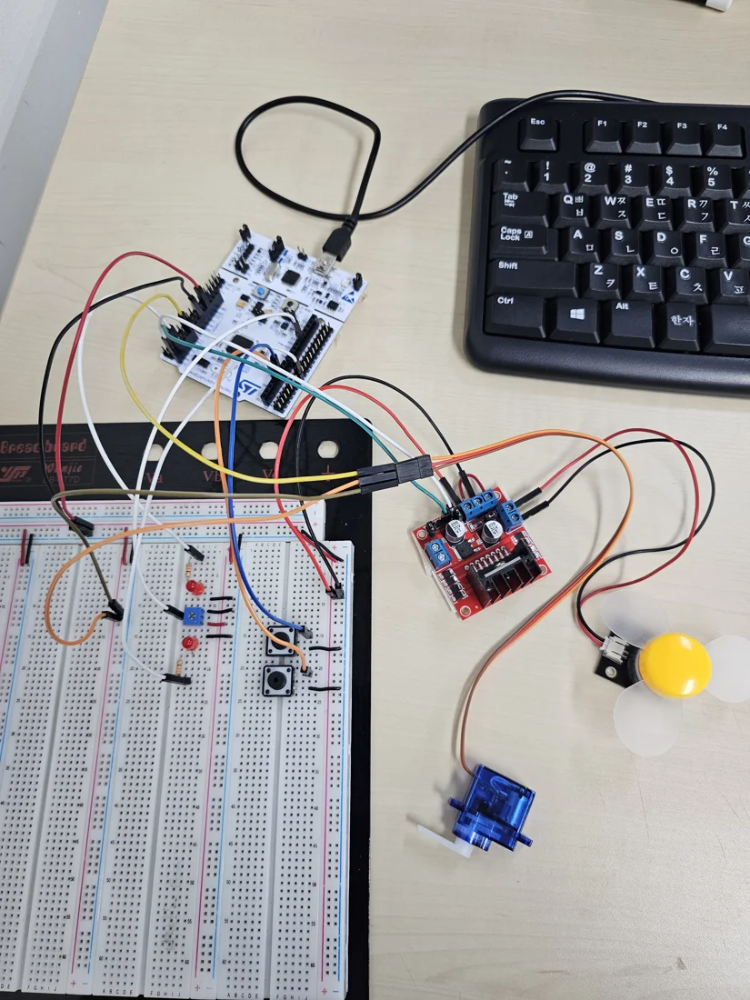

Smart Monitoring System
STM32 베어메탈 펌웨어, Qt 관제 서버, Android 앱을 연결해 계측·자동 차단·원격 제어·현장 영상을 한 흐름으로 구성했습니다.
01. 프로젝트와 본인 역할
STM32 레지스터 기반 펌웨어, Qt 관제 서버, Android 클라이언트를 직접 구현하고 UART·TCP로 연동했습니다. 가변저항으로 입력을 조절하고 서보·팬·LED를 연결해 자동 차단과 수동 복구 흐름을 구성했습니다.



02. 시스템 구조
저장소의 시스템 구조를 요약한 설명입니다. 각 블록은 데이터·제어 경로를 나타냅니다.
03. 핵심 설계 판단
MCU·중계·모바일의 역할 분리
STM32는 ADC와 액추에이터를 다루고, Qt는 UART/TCP 중계와 임계값 판단, Android는 영상 송신과 원격 명령을 담당합니다.
TCP의 메시지 경계를 명시
JPEG 앞에 4바이트 Big-Endian 길이를 붙이고 수신 버퍼에 프레임이 완성될 때까지 기다립니다. UART의 계측값은 개행으로 구분합니다.
같은 제어 상태의 반복 적용 억제
차단·복구 상태를 관리해 동일 명령으로 액추에이터를 반복 갱신하지 않도록 합니다. 현장 버튼과 원격 명령을 같은 상태 변경 경로에 연결합니다.
04. 문제 해결 사례
- 현상
서보의 지시 각도와 실제 동작이 맞지 않는 문제가 있었습니다.
- 원인 파악
APB1 버스 주파수와 TIM2 입력 클럭을 혼동해 PWM 분주 기준이 어긋난 경로를 확인했습니다.
- 수정
타이머 입력 96 MHz에 맞춰 PSC=95, ARR=19999로 설정해 1 μs tick과 20 ms 주기를 구성했습니다.
- 확인 결과
timer.c에 96 MHz 기준 PWM 설정을 반영했습니다. 자동 차단, 원격 명령, 현장 버튼과 Qt GUI를 통한 차단·복구 동작을 시연했습니다.
05. 구현 결과
입력값에 따른 자동 차단과 Android·현장 버튼·Qt GUI의 수동 제어를 연동했습니다. 스마트폰 카메라 영상, 센서 차트, CSV 기록을 하나의 관제 화면에 구성했으며, 전체 시연과 UART/TCP 규약·펌웨어·앱 문서를 공개했습니다.
06. 관련 자료
사진·시연·기술 근거: 프로젝트 공개 저장소. 사진은 웹 열람을 위해 크기와 형식을 조정했습니다. 외부 영상은 링크에서 직접 재생할 수 있습니다.